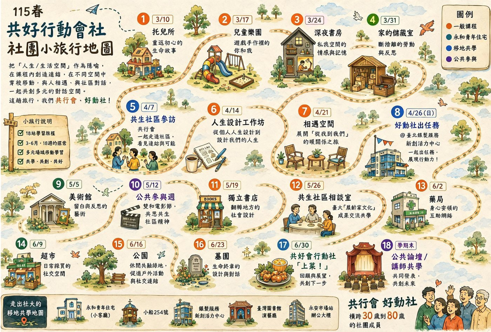
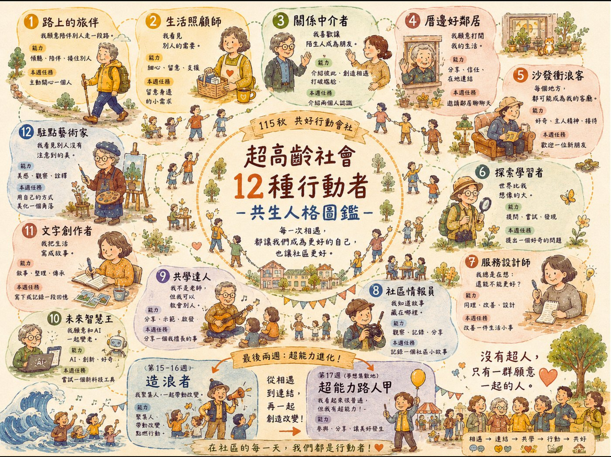

實踐成果集
場域關係設計數位策展成果
把抽象的高齡議題轉化成可感、可參與的生活展覽，是我在潭美銀髮服務新創活力中心的核心工作。線上策展不只是把展品搬上網，而是一次關係設計：讓不同世代的人在同一個敘事裡相遇。
一個人變老：都會安老的多元面貌
潭美 2026 年的第一檔主題展，以獨居獨老為題。「一個人變老」不只是高齡議題，而是每個人不管在什麼年齡都會碰到的人際連結課題。展覽回應全台啟動的「獨老大調查」，從都會安老的現實出發，翻轉把獨居獨老等同於孤單、弱勢的刻板印象，呈現一個人變老的多元樣貌。
策展過程本身也是三個場域的交織：策展資料的研讀與論述撰寫，同時是台大展齡家文化課程的備課素材；課程裡的青銀對話與永和社大共好行動會社的成果發表，又回過頭成為展覽敘事的行動紀錄。
數位陪伴學
臺北市 65 歲以上長者的上網率僅 43%，數位落差在超高齡社會裡疊加了獨居與孤獨的風險。但手機課的現場一再顯示：長輩學會視訊，是為了在週末看見孫子的臉；學會相簿，是為了記錄自己走過的社區。學手機的意義，遠不只是學會一項技能。
這檔展覽主張數位陪伴不是工具，而是「彼此看見、彼此傾聽」的療癒儀式。策展形式包含《數位陪伴學》Podcast 五集、長者手機照片展與數位陪伴共學日，並把現場經驗整理成可以帶走、也可以被複製的《數位陪伴學》現場秘笈。合作夥伴為智樂活 Funaging。
數位陪伴的主詞，從來不是數位，是人。
共學社群的培力設計
共好行動會社是我在永和社區大學陪伴的跨世代學習社群，成員橫跨 30 到 80 歲。它的核心精神是：每個成員都獨一無二，帶著自己的生命經驗與智慧，可以成為共同設計社區生活、傳承智慧的行動夥伴。
社團的學習路徑從自我賦能開始。115 春以「人生／生活空間」作為隱喻，設計 18 站的移動共學旅程，在不同空間之間穿梭、與人相遇、與社區對話；暑假則透過揪伴籌備活動，在做中學、學中做，長出屬於社團自己的共學培力之道。

引導提問：印象最深刻的景點？我們想要再次回訪的景點？
到了 115 秋，焦點從空間回到人：在在地共生共好的生態系裡，社大作為相遇之所，我們現在扮演什麼角色？又期待自己成為什麼樣的行動者？我設計了「超高齡社會 12 種行動者．共生人格圖鑑」，邀請每位學員辨認自己既有的能力，也選擇想嘗試的新角色——有人擅長傾聽、有人善於連結、有人願意提問或分享故事。

引導提問：我們會遇見／成為什麼樣的行動者？
共好不要求每個人都一樣厲害，而是讓不同能力彼此需要、彼此補位。沒有超人，只有一群願意揪伴同行的人。
讓一個社群持續彼此連結的，從來不是台上的指導或外在的要求，而是引導與設計——設計出讓人願意彼此信任的對話交流。關係設計很燒腦，但每次看見大家自然而然的互動，看見他們在差異中主動創造連結、看見互補與合作的可能，都會覺得值得。
展齡教學藝術家的課程探索實作成果
台大創新設計學院「在地展齡：家文化專題」每次開課都挑一個重點實驗的面向來設計跨世代對話。以下是歷年學生與長者共創的成果：
| 學期 | 課程名稱 | 合作單位 | 成果 |
|---|---|---|---|
| 113-2（2025 春） | 台大展齡家文化創生課程｜Podcast 共創計畫 | 潭美銀髮服務新創活力中心 | Spotify 收聽 |
| 112-2（2024 春） | 台大展齡家文化 | 國家兩廳院 | Padlet 作品集 |
| 111-2（2023 春） | 台大展齡家文化 ft. 國家兩廳院青銀有約 | 國家兩廳院 | Padlet 作品集 |
| 110-2（2022 春） | 台大展齡家文化 ft. 國家兩廳院青銀有約 | 國家兩廳院 | Padlet 作品集 |
課程與國家兩廳院「青銀有約」專案合作，引導學生實踐跨世代對話與文化轉譯，體現「課堂即田野」的教學哲學。